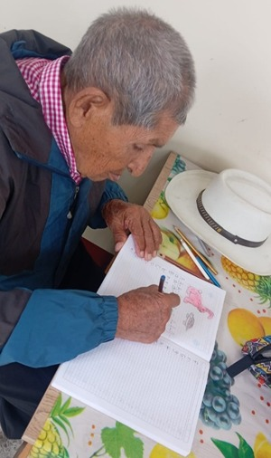
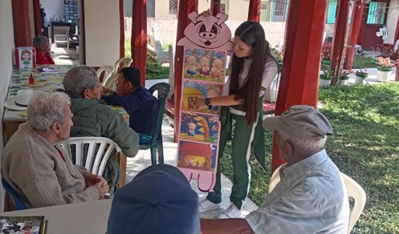
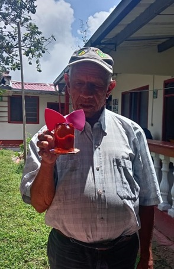
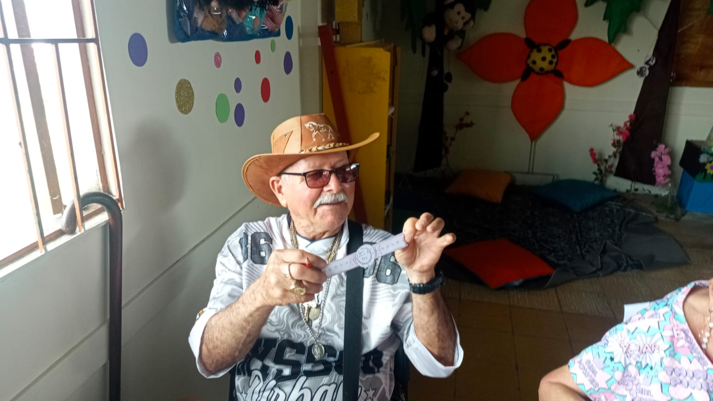
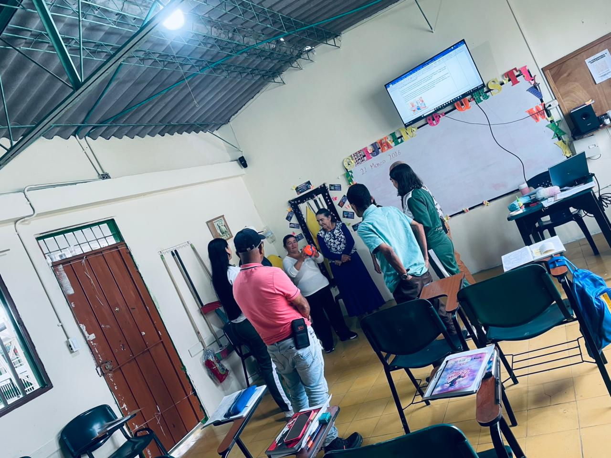

leyendo un pequeño texto enfocado en la letra “i”, con el acompañamiento y apoyo de la maestra en formación.
Un vistazo a los momentos más significativos de nuestro proceso de alfabetización en comunidad.
leyendo un pequeño texto enfocado en la letra “i”, con el acompañamiento y apoyo de la maestra en formación.

proyecto transversal, en la cual se trabaja la letra “i”, rellenándola con elementos de la naturaleza.

completando palabras con las letras “i” y “a”.

Don Adán repasa emocionado el abecedario, haciendo planas de cada letra en mayúscula y minúscula de la z.

explicación del cuento de los tres cerditos a partir de un acordeón con imágenes de la escena.

En esta imagen se ve a don Adolfo sosteniendo la creación de su alcancía, la cuál, se realizó en el proyecto transversal

juego de cartas de uno, donde la docente mencionaba un número y un color y el adulto que tuviera esa carta la volteaba boca arriba.

Mientras trabajaba, diseñaba su reloj de forma creativa y escribía en el centro un mensaje con sus metas, deseos o propósitos para el nuevo año, expresando sus ideas y personalidad.

Aquí podemos ver a nuestros estudiantes, estaban realizando la portada como la de un libro. Con material llevado por las docentes en formación. La portada debía tratarse de su propia vida.

En este momento se desarrollaba la actividad “La pelota viajera de los sustantivos”, donde la docente en formación guiaba a los estudiantes en un ejercicio dinámico de participación.